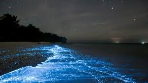
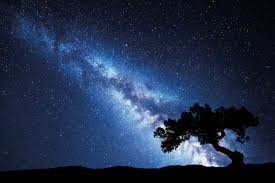

NATURE LOVE
Sunrise is one of the most beautiful scenes of Nature. It gives new life to all creatures and plants. Plainly speaking it means the end of dark night and the beginning of a fresh day. One should get up early in the morning to enjoy the sight of sunrise. Not only this, one must climb a hill or some other high point. Before the sun comes out, the sky turns purple all round. The birds start chirruping and flowers emit smell. Soon the sun comes out behind the hills. At first it has a curved shape, but soon it forms a complete circle emitting sunshine all around. As the sun goes up, the circle becomes smaller but compact and one can hardly look at it with naked eyes. Watching the sunrise and absorbing its magnetic waves gives a strange thrill of vitality and power. New ideas spring up. Poets got whole philosophy of life by watching the sunrise and sunset daily.Sunrise has a curative value and many diseases are cured by its effects. The soft beams of the rising sun are especially beneficial to the eyes and strengthen our bones. It is because of the habit of seeing the sunrise daily that the early risers are always healthy.
Sunset
Sunset, also known as sundown, is the daily disappearance of the Sun below the horizon due to Earth's rotation. As viewed from the Equator, the equinox Sun sets exactly due west in both Spring and Autumn. As viewed from the middle latitudes, the local summer Sun sets to the northwest for the Northern Hemisphere, but to the southwest for the Southern Hemisphere. The time of sunset is defined in astronomy as the moment when the upper limb of the Sun disappears below the horizon. Near the horizon, atmospheric refraction causes sunlight rays to be distorted to such an extent that geometrically the solar disk is already about one diameter below the horizon when a sunset is observed.
Night Photography
 
Night or nighttime (also spelled night-time or night time) is the period of ambient darkness from sunset to sunrise during each 24-hour day,when the Sun is below the horizon. The exact time when night begins and ends (equally true with evening) depends on the location and varies throughout the year. When night is considered as a period that which follows evening, it is usually considered to start around 8 pm and to last to about 4 am. Night ends with coming of morning at sunrise. The word can be used in a different sense as the time between bedtime and morning. In common communication, the word night is used as a farewell ("good night") and sometimes shortened to "night", mainly when someone is going to sleep or leaving.For example: "It was nice to see you. Good night!"[citation needed] Unlike "good morning", "good afternoon", and "good evening", "good night" (or "goodnight") is not used as a greeting. Complete darkness or astronomical night is the period between astronomical dusk and astronomical dawn when the Sun is between 18 and 90 degrees below the horizon and does not illuminate the sky. Natural illumination at night is still provided by a combination of moonlight, planetary light, starlight, zodiacal light, gegenschein, and airglow. In some circumstances, aurorae, lightning, and bioluminescence can provide some illumination. The glow provided by artificial lighting is sometimes referred to as light pollution because it can interfere with observational astronomy and ecosystems.